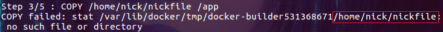
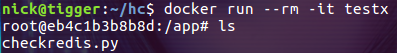
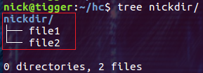
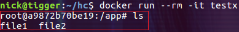
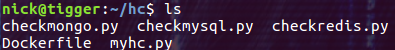
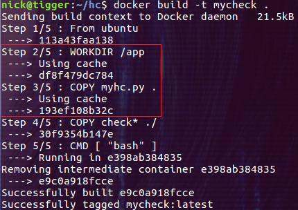

Dockerfile 中的 COPY 与 ADD 命令
Build 上下文的概念
在使用 docker build 命令通过 Dockerfile 创建镜像时，会产生一个 build 上下文(context)。所谓的 build 上下文就是 docker build 命令的 PATH 或 URL 指定的路径中的文件的集合。在镜像 build 过程中可以引用上下文中的任何文件，比如我们要介绍的 COPY 和 ADD 命令，就可以引用上下文中的文件。
默认情况下 docker build -t testx . 命令中的 . 表示 build 上下文为当前目录。当然我们可以指定一个目录作为上下文，比如下面的命令：
docker build -t testx /home/nick/hc
我们指定 /home/nick/hc 目录为 build 上下文，默认情况下 docker 会使用在上下文的根目录下找到的 Dockerfile 文件。
COPY 和 ADD 命令不能拷贝上下文之外的本地文件
对于 COPY 和 ADD 命令来说，如果要把本地的文件拷贝到镜像中，那么本地的文件必须是在上下文目录中的文件。其实这一点很好解释，因为在执行 build 命令时，docker 客户端会把上下文中的所有文件发送给 docker daemon。考虑 docker 客户端和 docker daemon 不在同一台机器上的情况，build 命令只能从上下文中获取文件。如果我们在 Dockerfile 的 COPY 和 ADD 命令中引用了上下文中没有的文件，就会收到类似下面的错误：

与 WORKDIR 协同工作
WORKDIR 命令为后续的 RUN、CMD、COPY、ADD 等命令配置工作目录。在设置了 WORKDIR 命令后，接下来的 COPY 和 ADD 命令中的相对路径就是相对于 WORKDIR 指定的路径。比如我们在 Dockerfile 中添加下面的命令：
WORKDIR /app
COPY checkredis.py .
然后构建名称为 testx 的容器镜像，并运行一个容器查看文件路径：

checkredis.py 文件就是被复制到了 WORKDIR /app 目录下。
COPY 命令的简单性
如果仅仅是把本地的文件拷贝到容器镜像中，COPY 命令是最合适不过的。其命令的格式为：
COPY <src> <dest>
除了指定完整的文件名外，COPY 命令还支持 Go 风格的通配符，比如：
COPY check* /testdir/ # 拷贝所有 check 开头的文件
COPY check?.log /testdir/ # ? 是单个字符的占位符，比如匹配文件 check1.log
对于目录而言，COPY 和 ADD 命令具有相同的特点：只复制目录中的内容而不包含目录自身。比如我们在 Dockerfile 中添加下面的命令：
WORKDIR /app
COPY nickdir .
其中 nickdir 目录的结构如下：

重新构建镜像 testx，运行一个容器并查看 /app 目录下的内容：

这里只有 file1 和 file2，少了一层目录 nickdir。如果想让 file1 和 file2 还保存在 nickdir 目录中，需要在目标路径中指定这个目录的名称，比如：
WORKDIR /app
COPY nickdir ./nickdir
COPY 命令区别于 ADD 命令的一个用法是在 multistage 场景下。关于 multistage 的介绍和用法请参考笔者的《Dockerfile 中的 multi-stage》一文。在 multistage 的用法中，可以使用 COPY 命令把前一阶段构建的产物拷贝到另一个镜像中，比如：
FROM golang:1.11.11
WORKDIR /go/src/github.com/sparkdevo/href-counter/
RUN go get -d -v golang.org/x/net/html
COPY app.go .
RUN CGO_ENABLED=0 GOOS=linux go build -a -installsuffix cgo -o app .
FROM alpine:latest
RUN apk --no-cache add ca-certificates
WORKDIR /root/
COPY --from=0 /go/src/github.com/sparkdevo/href-counter/app .
CMD ["./app"]
这段代码引用自《Dockerfile 中的 multi-stage》一文，其中的 COPY 命令通过指定 --from=0 参数，把前一阶段构建的产物拷贝到了当前的镜像中。
ADD 命令还可以干其它事情
ADD 命令的格式和 COPY 命令相同，也是：
ADD <src> <dest>
除了不能用在 multistage 的场景下，ADD 命令可以完成 COPY 命令的所有功能，并且还可以完成两类超酷的功能：
-
解压压缩文件并把它们添加到镜像中
-
从 url 拷贝文件到镜像中
当然，这些功能也让 ADD 命令用起来复杂一些，不如 COPY 命令那么直观。
解压压缩文件并把它们添加到镜像中
如果我们有一个压缩文件包，并且需要把这个压缩包中的文件添加到镜像中。需不需要先解开压缩包然后执行 COPY 命令呢？当然不需要！我们可以通过 ADD 命令一次搞定：
WORKDIR /app
ADD nickdir.tar.gz .
这应该是 ADD 命令的最佳使用场景了！
从 url 拷贝文件到镜像中
这是一个更加酷炫的用法！但是在 docker 官方文档的最佳实践中却强烈建议不要这么用！！docker 官方建议我们当需要从远程复制文件时，最好使用 curl 或 wget 命令来代替 ADD 命令。原因是，当使用 ADD 命令时，会创建更多的镜像层，当然镜像的 size 也会更大(下面的两段代码来自 docker 官方文档)：
ADD http://example.com/big.tar.xz /usr/src/things/
RUN tar -xJf /usr/src/things/big.tar.xz -C /usr/src/things
RUN make -C /usr/src/things all
如果使用下面的命令，不仅镜像的层数减少，而且镜像中也不包含 big.tar.xz 文件：
RUN mkdir -p /usr/src/things \
&& curl -SL http://example.com/big.tar.xz \
| tar -xJC /usr/src/things \
&& make -C /usr/src/things all
好吧，看起来只有在解压压缩文件并把它们添加到镜像中时才需要 ADD 命令！
加速镜像构建的技巧
在使用 COPY 和 ADD 命令时，我们可以通过一些技巧来加速镜像的 build 过程。比如把那些最不容易发生变化的文件的拷贝操作放在较低的镜像层中，这样在重新 build 镜像时就会使用前面 build 产生的缓存。比如笔者构建镜像时需要用到下面几个文件：

其中 myhc.py 文件不经常变化，而 checkmongo.py、checkmysql.py 和 checkredis.py 这三个文件则经常变化，那么我们可这样来设计 Dockerfile 文件：
WORKDIR /app
COPY myhc.py .
COPY check* ./
让 COPY myhc.py . 单独占据一个镜像层，当 build 过一次后，每次因 checkmongo.py、checkmysql.py 和 checkredis.py 这三个文件变化而导致的重新 build 都不会重新 build COPY myhc.py . 镜像层：

如上图所示，第二步和第三步都没有重新 build 镜像层，而是使用了之前的缓存，从第四步才开始重新 build 了镜像层。当文件 size 比较大且文件的数量又比较多，尤其是需要执行安装等操作时，这样的设计对于 build 速度的提升还是很明显的。所以我们应该尽量选择能够使用缓存的 Dockerfile 写法。
总结
当第一次看到 COPY 和 ADD 命令时不免让人感到疑惑。但分析之后大家会发现 COPY 命令是为最基本的用法设计的，概念清晰，操作简单。而 ADD 命令基本上是 COPY 命令的超集(除了 multistage 场景)，可以实现一些方便、酷炫的拷贝操作。ADD 命令在增加了功能的同时也增加了使用它的复杂度，比如从 url 拷贝压缩文件时弊大于利。希望本文能够解去大家对 Dockerfile 中 COPY 和 ADD 命令的疑惑。